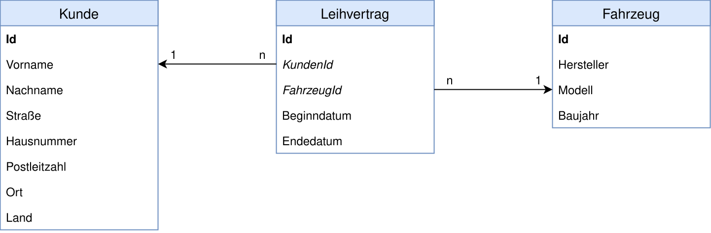

Früher fuhr man dorthin, wo es etwas Schönes zu sehen gab. Heute fährt man dahin, wo es einen Parkplatz gibt. 🚗 Um diesem Problem entgegen zu wirken, weichen immer mehr Menschen auf Car Sharing aus, anstatt sich ein eigenes Auto zu kaufen. In dieser Aufgabe soll es daher darum gehen, die Software für einen Autoverleih zu programmieren.
Bildnachweise: Pixabay: Bilderandi, Pixabay: Emslichter
Zunächst einmal brauchen wir natürlich ein Datenmodell. Irgend etwas einfaches, was nicht zu kompliziert ist, aber dennoch unseren Anwendungsfall abdeckt. Die folgenden drei Tabellen sollen uns daher langen, auch wenn man in einer echten Anwendung noch viel mehr Daten speichern müsste:
Legt eine neue Web Application in Netbeans an unterteilt sie in verschiedene Pakete für Entities, EJBs und Webservices. Anschließend legt darin passende Persistence Entites und für jede Persistence Entity eine dazugeöhrige Enterprise Java Bean zum Lesen und Schreiben von Datensätzen an. ️️️🖋️ Wenn ihr wollt, könnt ihr dabei auf die EntityBean aus den JPA-Folien zurückgreifen.
Die Datumsfelder könnt ihr wie folgt definieren:
import java.util.Date;
…
@Temporal(TemporalType.DATE)
private Date startDatum = new Date();
@Temporal(TemporalType.DATE)
private Date endeDatum = new Date();
Auf Basis der Enterprise Java Beans soll nun ein SOAP-Webservice implementiert werden, der folgende Methoden zur Verfügung stellt, wobei die Klasse von Hand angelegt und ausprogrammiert werden sollte. Zusätzlich sollten die Methodenparameter und Rückgabewerte durch Verwendung der beiden Annotationen @WebResult und @WebParam im XML sprechende Namen erhalten.
| 😎 | Registrieren eines neuen Kundendatensatzes |
| 🚓 | Anlegen eines neuen Fahrzeugs¹ |
| 📄 | Ausleihen eines Fahrzeugs |
| 🏎️ | Auflisten aller vorhandenen Fahrzeuge |
| 🖨️ | Auflisten aller Leihverträge eines Kunden |
Als kleine Herausforderung 🤔 soll das Ausleihen eines Fahrzeugs nur möglich sein, wenn es keine Überschneidungen mit einem bereits bestehenden Leihvertrag gibt. Ihr müsst also sicherstellen, dass es keine Leihverträge gibt, die sich auf dasselbe Fahrzeug beziehen und deren Zeitspanne sich mit dem Start- oder Endedatum des anzulegenden Leihvertrags überschneidet. 📆 Andernfalls soll eine Exception geworfen werden.
¹ In einer echten Anwendung würde man die Anlage eines neuen Fahrzeuges natürlich anders lösen. Da würde man eher eine interne Admin-Webseite programmieren, über die solche Daten gepflegt werden können.
Wenn ihr den Webserivce in SoapUI testet, müsst ihr die Datumsfelder als yyyy-mm-dd, also zum Beispiel 2018-03-16, an den Webservice schicken.
.----.
_.'__ `.
.--(#)(##)---/#\
.' @ /###\
: , #####
`-..__.-' _.-\###/
`;_: `"'
.'"""""`.
/, JOE ,\
// COOL! \\
-Car Sharing-
`-._______.-'
___`. | .'___
(______|______)
=========
Hauptmenü
=========
[K] Kunde anlegen
[F] Fahrzeug anlegen
[A] Fahrzeug ausleihen
[L] Leihverträge auflisten
[E] Ende
Deine Auswahl: K
=============
Kunde anlegen
=============
Vorname: Charly
Nachname: Brown
Straße: Peanuts Park Way
Hausnummer: 7
Postleitzahl: 55401
Ort: Minesota
Land: USA
Kundennummer 4711 wurde angelegt.
=========
Hauptmenü
=========
[K] Kunde anlegen
[F] Fahrzeug anlegen
[A] Fahrzeug ausleihen
[L] Leihverträge auflisten
[E] Ende
Deine Auswahl: A
==================
Fahrzeug ausleihen
==================
Folgende Fahrzeuge stehen zur Verfügung:
Ford Mustang, Baujahr 2017, ID 100
Mercedes Benz C-Klasse, Baujahr 2018, ID 150
BMW 5er Cabrio, Baujahr 2016, ID 165
Seat Leon, Baujahr 2017, ID 210
Kundennummer: 4711
Fahrzeug-ID: 100
Abholung am (yyyy-mm-dd): 2018-04-01
Rückgabe am (yyyy-mm-dd): 2018-04-10
Alles klar! Leihvertrag mit der ID 0815 wurde angelegt.
=========
Hauptmenü
=========
… und so weiter …
Peanuts Ascii Art: Christopher Johnson's ASCII Art Collection
1) Mit folgendem Code könnt ihr eine Zeile von der Tastatur einlesen:
BufferedReader fromKeyboard = new BufferedReader(new InputStreamReader(System.in);
String input = fromKeyboard.readLine();
2) Ein Datumsobjekt zur Übergabe an den Webservice kann wie folgt erzeugt werden:
DatatypeFactory dtf = DatatypeFactory.newInstance();
XMLGregorianCalendar startTimeFrom = dtf.newXMLGregorianCalendar("2018-03-16");
Achtung! In JAX-WS scheint es einen Bug zu geben, dass ein Datumsobjekt nicht an den Webservice übergeben wird, wenn es nicht direkt als Methodenparameter übergeben wird. Ist das Datumsobjekt ein Attribut einer Klasse (z.B. eines Leihvertrags), wird es von Java einfach nicht in das XML aufgenommen. Für diesen Bug bekommt ihr natürlich keinen Punktabzug. 😇
3) Ein vom Webservice empfangenes Datumsobjekt kann wie folgt für die Ausgabe formiatiert werden:
SimpleDateFormat fmt = new SimpleDateFormat("dd.MM.yyyy");
Date date = empfangenesDatum.toGregorianCalendar().getTime();
System.out.println("Datum und Uhrzeit in schön: " + fmt.format(date));
4) Angenommen euer Webservice hat eine Methode namens saveNewCustomer(), die einfach ein Customer-Objekt entgegen nimmt und das gespeicherte Customer-Objekt zurückliefert. Ungefähr so:
public Customer saveNewCustomer(Customer customer)Dann müsst ihr die Methode im Client wie folgt aufrufen:
Customer customer = new Customer();
customer.setFirstName("Charly");
…
Holder<Customer> hCustomer = new Holder<>(customer);
webservice.saveNewCustomer(hCustomer);
System.out.println("Kunde mit der ID " + hCustomer.value.getId() + " wurde angelegt.");
5) Wenn ihr ganz am Anfang des Programms folgende Zeilen einbaut, werden die ausgetauschten HTTP-Nachrichten der Webservice-Aufrufe auf der Konsole ausgegeben:
System.setProperty("com.sun.xml.ws.transport.http.client.HttpTransportPipe.dump", "true");
System.setProperty("com.sun.xml.internal.ws.transport.http.client.HttpTransportPipe.dump", "true");
System.setProperty("com.sun.xml.ws.transport.http.HttpAdapter.dump", "true");
System.setProperty("com.sun.xml.internal.ws.transport.http.HttpAdapter.dump", "true");